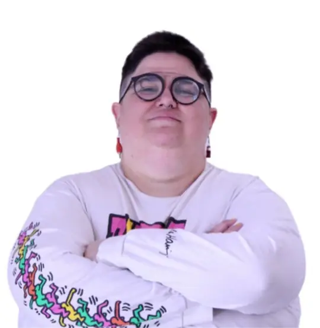

Open to new roles. Remote, from Montevideo.
Details matter.A person notices them.
Eight-plus years finding what an automated check misses, then explaining it so the whole team understands.

- ISTQBCertified Tester, Foundation Level
- English C2Cambridge Proficiency
- Women TechmakersAmbassador, Uruguay
- Google CloudCertified Generative AI Leader
Ask better. Find it sooner.
I’m a Senior QA specializing in manual testing. For more than eight years I’ve been finding what a system gets wrong before the people who rely on it notice. Curiosity, judgment and the right questions make products better.
I use Gherkin, Xray, Postman, SQL and Git to turn business needs into rigorous test strategies. I’m interested in applying AI to testing while keeping the manual judgment that makes a good tester.
“If it’s worth doing, it’s worth doing well.”
Explore with intent
Exploratory and functional testing to uncover unexpected behavior and friction in the experience.
Exploratory, functional, API
Bring clarity to the team
Clear requirements, BDD scenarios and acceptance criteria that connect business, development and quality.
BDD, Gherkin, Jira, Xray
Think about who uses it
A Quality Experience lens: accessibility, context and real needs in every quality decision.
QX, accessibility, agile
Getting ready to lead.
Testing already puts me between product, development and the business, making sure everyone agrees on what “done” means. Over the last two years I’ve trained for the work around that: planning delivery, aligning stakeholders and helping people grow.
In practice
- Mentoring. I ran upskilling courses for more than ten junior QAs at Globant.
- Community. As a Women Techmakers Ambassador, I coordinate local events and speakers.
- Onboarding. I wrote an open playbook for teams bringing junior testers on board.
-
2026
Despegadas, inclusive leadership program
Empathy, funded by INEFOP
Four months on inclusive leadership with a gender perspective, strategic skills, mentoring, and an applied leadership project.
-
2026
Google Stakeholder Management
Google, professional specialization
Stakeholder analysis, communication planning, RACI charts and leading inclusive teams.
Verify credential -
2025
Generative AI Leader
Google Cloud certification, valid until 2028
Deciding where generative AI belongs in a team’s work, and how to adopt it responsibly.
-
2025
Google Project Management
Google, professional certificate
Initiating, planning and running both traditional and agile projects.
Verify credential
Learning is part of the job.
Testing credentials, most recent first.
| Year | Credential | Issued by |
|---|---|---|
| 2026 | Effective Metric Usage, taught by Lisa Crispin | QLA |
| 2023 | Professional Testing Master, advanced level | UTN FRBA |
| 2015 | ISTQB Certified Tester, Foundation Level | ISTQB |
| 2005 | Certificate of Proficiency in English, C2 | Cambridge English |
Work in the open.
Projects anyone can read, run and reuse on my GitHub.
-
Quality Engineering PlaybookStrategy, BDD, API testing, QX
A living guide to test strategy, documentation and onboarding for junior testers, for any team to take and adapt.
View repository -
PokeAPI QA AutomationJava, Cucumber, REST Assured, Playwright
API and UI tests for PokeAPI, written in Gherkin so QA, developers and product can all read them. Runs weekly on GitHub Actions.
View repository -
LED panel projectsPython, Claude Code
Small programs for a 96×16 LED panel, built by talking with an AI: a desk clock with weather and email, a Spotify ticker and prompt-to-pixel-art.
View repository
What I learn, I share.
Most of these talks came out of Women Techmakers and TestingUY.
-
2026
QX: from “Bug Hunter” to “Customer Advocate”
Abstracta Tech Talk. The voice of the people who use a product, and the friction the code never shows.
Watch the talk -
2025
Neurodivergence in the service of quality
nerdear.la. How pattern recognition and attention to the unexpected can be strengths in testing.
Watch the talk -
2024
The seven testing principles in real life
Abstracta Tech Talks. A realistic take on applying them day to day.
Watch the talk -
2022
The seven principles and the real world
TCV2022. How testing principles hold up, or bend, in professional practice.
Watch the talk
Women Techmakers, Ambassador
I build community and visible role models, bringing more women into tech through talks, mentoring and content.
TestingUY, collaborator
I help promote testing in Uruguay and the region, where quality professionals share knowledge and practice.